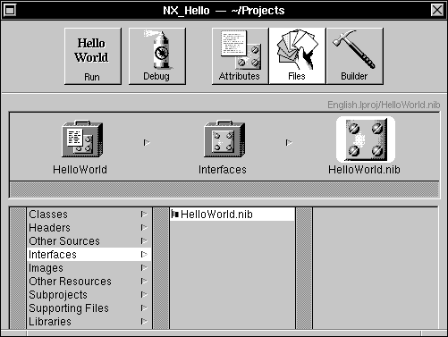

Copyright ©1995 by NeXT Computer, Inc. All Rights Reserved.
| 2 |
The Project Builder Application
| Project Builder is the hub of application development in NEXTSTEP. It manages the components of your application and gives you access to the other development tools you use to create and modify these components. Project Builder is involved in all stages of the development process, from providing you with the basic building blocks for a new application to installing the application when it's finished.
Project Builder's unit of organization is the project. A project can be defined in two ways: conceptually and physically. Conceptually, a project comprises a number of source components and is intended to produce a given end product, such as an application. (Other types of end products are possible, as described below.) Physically, a project is a directory containing source files and Project Builder's controlling file, PB.project. This file records the components of the project, the intended end product, and other information. For a file to be part of a project, it must reside in the project directory and be recorded in the project's PB.project file. You don't edit PB.project directly; your actions in the Project Builder application--adding source files, modifying the project name or installation directory, and so on--have the effect of updating this file. Project Builder can be used to create and maintain the following standard types of NEXTSTEP projects: |
| Type of Project | Description | |
| application | A stand-alone NEXTSTEP application, such as those found in /NextApps or /LocalApps. | |
| subproject | A project within a project. With larger applications, it's often convenient to group components into subprojects, which can be built independently from the main project. In building a project, Project Builder builds the subprojects as needed and then uses their end products--usually ".o" files--to build the main project. | |
| bundle | A directory containing resources that can be used by one or more application. These resources might include such things as images, sounds, character strings, nib files, or executable code. For more information, see the class specification for the NXBundle class in NEXTSTEP General Reference. A bundle can be a stand-alone project, or contained within another project. | |
| palette | A loadable palette that can be added to Interface Builder's Palettes window. See "Adding Custom Palettes, Inspectors, and Editors" in the next chapter for more information. |
| To let you develop applications to run on any architecture that NEXTSTEP runs on (e.g., Motorola, Intel, and others), Project Builder supports development of multiple architecture binaries--also known as "fat" binaries. Using this feature, you can create a single version of your application containing executable binaries for each supported architecture. When the user starts such applications, the system automatically selects the correct binary for the underlaying architecture and runs that. All other application resources--user interface archives, images, sounds, and data--are shared by the various versions of the binary.
Project Builder also helps you prepare your application (or other type of project) for various language markets, a process called "localization". It does this by helping you group language-dependent components of your application--TIFF and nib files, for example--in subdirectories of the project. These subdirectories are named for a language and have a ".lproj" extension (for example, Spanish.lproj), and so are commonly called ".lproj" directories. Through the facilities of the NXBundle class, your application can load the appropriate, language-dependent components depending on the user's preferred language. (See the NXBundle class specification in NEXTSTEP General Reference and the file /NextLibrary/Documentation/NextDev/Concepts/Localization.rtfd for more information.) You can start Project Builder (located in /NextDeveloper/Apps) from the workspace as you would any other application, by double-clicking its icon in the workspace. When it starts up, only the main menu is visible. Once Project Builder is running, you can create a new project or open an existing project as described below. |
| Creating and Maintaining Projects in Project Builder |
| This section describes how to create a new project in Project Builder and how to convert a pre-Release 3 project to the Release 3 project format. You'll also find information here about maintaining your project.
Creating a New Project To create a new project, choose the New command in the Project menu. A panel appears in which you specify a pathname and name for the project. Specify a new directory on the Name line, or choose an existing directory in the browser (and leave the name PB.project in the Name field) if you want to use that directory as the root of the new project. |
| By default, the new project is a stand-alone application. A pop-up list in the panel lets you create a bundle or a palette instead. No matter what type of project you create, a project window for the new project appears. |
| You'll use this project window to maintain, build, and debug the project, as described in the rest of this chapter. For now, note the three modes of operation indicated by the three buttons in the upper right portion of the panel: |
| Mode | Purpose | |
| Attributes | Set attributes of your project. | |
| Files | Add, remove, or open project files. | |
| Builder | Build the project. |
| Opening an Existing Project
To open an existing project, choose the Open command in the Project menu. A standard Open panel appears in which you specify the project to open. Select the file named PB.project in the project directory and click Open to open the project. When you open a project, its project window appears in Project Manager.
Opening and Converting a Older Project Types To open an existing project that hasn't been converted to the Release 3 project format, choose the Open command in the Project menu. A standard Open panel appears in which you specify the project to open. Select the file named IB.proj in the project directory and click Open to open the project. |
| A panel appears warning you that the project file is an "old style IB.proj" which needs to be converted to a PB.project. (Note: Be sure to convert the project if you'll be continuing to maintain it in Release 3.) Since the conversion process overwrite several project files, you're asked if you want to back up those files first before converting the project. Unless you're sure you don't need to do this, you should click Backup First (or Cancel if you decide not to continue)--this causes a copy of the entire project directory to be made, with the name CopyOfProjectDirectory.
Once the project is converted, its project window appears in Project Manager. When you save the resulting project, it will be saved as a PB.project file in the same directory. This is the file you'll open in the future when you work with the project. You might want to build your newly converted project with the clean target, to make sure that it gets rebuilt from scratch under Release 3.
Setting Project Attributes To bring up the Attributes display, click the Attributes button in the project window. |
| The contents of the Attributes display varies depending on the type of project--application, bundle, or palette. The contents of these three types of Attributes display are shown below.
Application Attributes If the project is an application, the Attributes display contains the following controls for defining application attributes. |
| This group of controls includes fields for specifying the project name, the primary language (that is, the language in which the project is being developed), and the target directory. |
| This group of controls includes fields for specifying the application class and the application's main nib file, plus an option for regenerating the Main file whenever you save the project. (Project Builder maintains this file and you aren't expected to change it; therefore you should leave this option checked, unless there's a reason why you need to maintain the Main file yourself) |
| The Application Icon well displays the application icon. The default application (shown here) is used if you don't provide one of your own choosing. To associate a new icon with the application, drag its TIFF file from the workspace into the well. The file is copied to the project directory, although it doesn't appear in any of the categories shown in the File display. |
| The Document Icons and Extensions well is where you indicate what types of documents your application is able to deal with. If you're creating your own document type, create a document icon for it and drag the TIFF file containing that icon into the well. Once the icon is in the well, change its label to match the document extension. |
| System File Types lists NEXTSTEP file types (as identified by their standard NEXTSTEP file extensions), any of which you may choose to have your application handle by selecting the file type in the scrolling list. When you select a file type by clicking it, a check mark appears next to its name, and it gets added to the Document Icons and Extensions well. Click the file type again if you want to deselect it and remove it from the well.
Bundle Attributes If the project is a bundle (or subproject), the Attributes display contains the following controls for defining project attributes. |
| This pop-up list contains a Subproject item that lets you convert the bundle to a subproject. Note, however, that this is possible only with a bundle that's part of another project, not with a stand-alone bundle. |
| This group of controls includes fields for changing the project name and the primary language.
Palette Attributes If the project is a palette, the Attributes display contains the following controls for defining project attributes. |
| This group of controls includes fields for changing the project name and the primary language.
Managing Project Files The Files display of the project window is used to manage the files in the project. You can use this display to add or delete project files, as well as open them for viewing or editing. To bring up the Files display, click the Files button in the project window. |
|  |
| The Files display provides a file viewer similar to the Workspace Manager's File Viewer, with categories of project components displayed in the left-hand column and project files for each category displayed to the right. Note that these project categories don't correspond to project subdirectories--the categories are logical rather than physical groupings of files.
The project directory provides you and Project Builder with a convenient way to organize the files used in putting together your application. As shown here, files in the project directory are grouped by Project Manager into a number of categories. These categories are represented with a suitcase icon (and are frequently referred to as "suitcases"). Briefly, these categories are: |
| Category | Description | |
| Classes | Files containing code for custom classes used by an application. | |
| Headers | Files containing declarations of methods and functions used by an application | |
| Other Sources | Files containing code (other than class code) for an application. These may include ".m" files (containing Objective C code), ".c" files (containing standard C code), ".psw" files (containing PostScript code), and other sources. Project Builder automatically adds the file ApplicationName_main.m to Other Sources. | |
| Interfaces | Nib files for each application and for each new module added to an application. The flag icon next to a file name in the Interfaces suitcase indicates that the file is localizable (that is, the file is in the Language.lproj subdirectory in the project directory, rather than in the project directory itself). | |
| Images | Files containing images (other than icons) used by an application, including TIFF or EPS files. | |
| Other Resources | Files (such as sound files) for other resources used by an application. | |
| Subprojects | Directories containing subprojects used by an application | |
| Supporting Files | Files not used directly by the application but that should be kept with the application. | |
| Libraries | Libraries referenced by an application. NEXTSTEP libraries (including the default entries libNeXT_s and libMedia_s) are referenced but not copied into the project directory. Other libraries, such as those you create, may be added to the project directory. |
| You can use Project Builder's file viewer to: |
| Browse the project and the files it contains. | ||
| Add files to the project (as described below). | ||
| Remove files from the project by selecting the file in the browser and then choosing Remove in the Files menu. | ||
| Open a project file by double-clicking its name or icon (or, selecting the file in the browser and then choosing Open in Workspace in the Files menu). |
| There are in fact several ways to add an existing file to a project. The file can be already located in the project directory, or it can be somewhere else. To add it, use one of the following methods: |
| Drag the file from the File Viewer into the project window. If you drag it to the suitcase it belongs in, that suitcase will open up. If you let it go, it will be added to that suitcase. If instead you drag it to the project suitcase, the project suitcase will open up and the file will be added to it. The Classes suitcase takes ".m" files, the Headers takes ".h" files, and so on. "Other Sources" refers to files that are not headers or classes, but need to be compiled and linked into the target of the project (application, bundle or palette). "Other Resources" refers to files that need to be copied into the target. "Supporting Files" refers to files that are necessary to maintain the project, but don't end up in the target. | ||
| Select a suitcase and choose the Add command in the Files menu (or simply double-click the suitcase). A panel will appear, in which you specify a file to add to the selected suitcase. | ||
| Use the service that Project Builder supplies to other applications. Relevant applications have a command named Project in their Services menu. This command brings up a submenu containing two commands: Add To and Build. Add To can be used to add the current file to the project (in this case, the file must already be located in the project directory). |
| Also note the following shortcuts available in the File display: |
| Control-dragging in a file list allows you to reorder the files. This can be especially important in dealing with libraries, since the file order determines the link order. | ||
| Alternate-double-clicking the icon of a selected file selects that file in the workspace File Viewer, instead of opening it. | ||
| Command-double-clicking a source file opens both the file and its associated header file, if it exists. |
| Building the Project
When you instruct Project Builder to build the project, the project is compiled by the make program using the project's makefile. The project's source files are compiled and linked into an executable file. The project makefile provides the information make needs to do this job. The warnings generated by the compiler and link editor provide information to help you locate and fix bugs detected at compile time. To build the project, first bring up the Builder display by clicking the Builder button in the project window. |
| The Target pop-up is for specifying build arguments to be passed to make. The Options button brings up a panel for selecting a host to compile on and the architecture to build to. If you want to specify these build attributes, be sure to do so before starting to build the project.
Note: If you build the project on a remote host, be sure you know what version of NEXTSTEP the host is running. When you're ready to build the project, click the Build button. As the build progresses, the two views at the bottom of the window inform you of any warnings or error messages that occur--the upper Summary view is more selective in what it chooses to display, so you may choose to hide the lower Detail view and only refer to its output when you need to. |
| If an error is encountered during the build process, a message appears in both the Summary view and the Detail view, as shown here. Click a line in the Summary view to open the specified file; if you click a line containing an error message (shown in red on color displays and bold on monochrome displays), the file opens in Edit and scrolls to display the line that contains the error.
Build Targets app.make (the shared makefile used to generate the executable file for all applications created with Project Builder) defines a number of alternate targets to perform specific tasks at various phases of the application development process. To run make using the alternate targets, select the corresponding argument from the Targets pop-up in the Builder display. The pop-up list provides various targets, listed below along with the tasks they perform. |
| Target | Task | |
| app/bundle/palette | Compiles and links a debuggable, optimized version of the project. The target in this first pop-up item can be app, bundle, or palette, depending on the type of project you're building. The default target produces the same result. | |
| clean | Removes all derived files, such as object and executable files, from the project directory, returning the project to its precompiled state. | |
| debug | Compiles (with all warnings and -DDEBUG on) and links a debuggable, unoptimized version of the executable file with the extension ".debug". | |
| profile | Generates (with all warnings and -DPROFILE on) the file ApplicationName.profile, an executable containing code to generate a gprof report. This option is useful when you are performance tuning an application. See the UNIX manual page gprof for details on profiling. | |
| depend | Generates an optional Makefile.dependencies file, containing a complete dependency graph for the project, including headers. Once this file exists in the project directory, it's conditionally included by your project makefile. | |
| install | Builds (if needed) and copies the application into the installation directory specified in Project Builder, setting permissions and owners as appropriate. The default is $(HOME)/Apps, the Apps directory in the user's home directory. | |
| default | Compiles and links the project in the same way as the first entry in the pop-up (app, bundle, or palette). |
| The Preamble and Postamble File
Sometimes it's necessary to alter the standard build process as defined by the project makefile. You do this by adding to the project a Makefile.preamble file that overrides the macros defined in the project makefile. To override a macro definition in the project makefile, include a definition for the same macro in Makefile.preamble. For example, the following definition for the macro INSTALLDIR always appears in the project makefile: |
 INSTALLDIR = $(HOME)/Apps
INSTALLDIR = $(HOME)/Apps
| This macro causes the make install target to place the executable in the Apps subdirectory of your home directory. To have install place the executable in another directory, define the following macro in Makefile.preamble: |
 INSTALLDIR = /LocalApps
INSTALLDIR = /LocalApps
| To use one of the macros listed above in app.make, you first define it in Makefile.preamble. You can, for example, define link editor flags to add segments to your executable file. For example, an application might defines the following macro in its Makefile.preamble: |
 LDFLAGS = -segcreate EXTRA document extra.rtf
LDFLAGS = -segcreate EXTRA document extra.rtf
| Using this macro definition, the link editor will create a segment named "EXTRA" in the executable file; that segment will have a section named "document" containing the document file extra.rtf.
In other cases, it's useful to perform certain application building processes after those defined in the standard application makefile, or to redefine symbols previously defined in the standard application makefile. To do so, you use a Makefile.postamble file. The makefiles in /NextDeveloper/Makefiles include two files, Makefile.preamble.template and Makefile.postamble.template. You can look through those files for more information on how to create preamble and postamble files.
Setting Preferences You can specify preferences for a variety of options using the Preferences panel. To bring up the panel, choose the Preferences command in the Info menu. Enter values or click buttons to specify new preferences, as described below. Then click Set to set the new preferences (or click Revert to restore the previous settings). Note that the settings on the Preferences panel are global--they apply to all projects, not just the current project. |
| The controls in the Build Defaults group let you specify alternate targets to appear in the Builder display's Targets pop-up. They also let you specify build arguments to be passed to make, a remote host on which to build the project, and the architecture to build the project for. The check box lets you choose to continue building projects even when a fatal error is encountered during compiling. |
| The controls in the Tools group let you specify the programs to use to edit source code and debug the executable--these files are used in interactive debugging with Project Builder. You can also specify an alternative to /bin/make, the standard make program. |
| The controls in the Sounds group let you specify the sound cue to use when the project builds successfully, and when the project fails to build. |
| The controls in the Build Service group let you specify what (if anything) you want to have happen after building your project (specifically, after building your project by choosing Project Builder's Build command on the Services menu)--Build only, Build and Run, or Build and Debug. |
| The controls in the Save Options group let you specify whether projects should be auto-saved, and whether the most recent backup file is automatically deleted or retained. |
| Running and Debugging an Application |
| In addition to maintaining and building a project, you can use Project Builder to run or debug the resulting application, as described in this section.
Running |
 |
| To run the project application, click the Run button in the project window. If the project hasn't been built yet, it's built and then the application is run. The Run button's icon is the same as the application icon--the icon shown here is the default application icon that's used if no other icon is specified in the Attributes display.
Tip: Alternate-clicking the Run button runs the application without building it first.
Debugging |
 |
| To debug the project application, click the Debug button in the project window. If the project hasn't been built yet, it's built first and then the application is run in debug mode.
Tip: Alternate-clicking the Debug button runs the application under the debugger without building it first. When you indicate that you want to debug an application in Project Builder, the following steps occur: |
| The project is built (unless it's already up to date). | ||
| Terminal creates a new window to run the GDB process in. | ||
| As GDB starts, it's instructed to read the PB.gdbinit file in the project directory. | ||
| The view command in the PB.gdbinit file is executed and causes a command named Gdb to appear in Edit's main menu. |
| Choose the Gdb command from Edit's main menu to display the GDB control panel. This panel has the application name as its title, and contains four groups of controls for interacting with GDB as you debug the application. (GDB commands that aren't accessible through the panel can still be executed manually in the shell window in which GDB is running.) |
| The first group (labeled either Running or Stopped) contains the following buttons for controlling the execution of the application. |
| Button | Description |
| Run | Starts the application being debugged. | |
| Continue | Continues the application being debugged, after a signal or breakpoint. | |
| Finish | Executes until the selected stack frame returns. (Upon return, the returned value is printed and put in the value history.) | |
| Quit | Exits GDB. | |
| Step | Steps the application until it reaches a different source line. | |
| Next | Steps the application, proceeding through subroutine calls. The Next command is like the Step command as long as there are no subroutine calls; if there are, the call is treated as one instruction. |
| The Line group contains controls for setting breakpoints in source files and running until a breakpoint is reached. These controls use Edit's current file and line as their argument. Click the Break At button to set a breakpoint at the line containing the insertion point in the main Edit window. Click the Run Until button to run the application until it reaches the next breakpoint. |
| The Selection group contains controls for evaluating and printing the value of a C or Objective C expression. These controls use Edit's current selection as their argument. Click the Print button to display the value of the selected expression. Click the Print* button to display the value that the expression points to. |
| The Stack group contains controls for browsing the data in the program being debugged. Clicking the Browse button causes the following browser panel to appear: |
| You can use this browser to select and inspect particular stack frames and their variables. |
| Project Builder Command Reference |
| Project Builder's main menu contains the standard Info, Edit, Windows, Services, Hide, and Quit commands. All commands unique to Project Builder are located in the Project and Files submenus--these menus and the commands they contain are described below.
Commands in the Project Menu The Project menu contains commands for creating and maintaining your projects. |
| Command | Description | |
| New | Creates a new project. | |
| Open | Opens an existing project. | |
| Open Makefile | Opens a window for just the Makefile of a project and displays the Builder view in the window. To build the project, click Build. | |
| Save | Saves the current project. | |
| New Subproject | Creates a new subproject. A panel appears in which you specify the name and type of subproject. The type can be either Subproject or Bundle. |
| Specify a name and type, and then click OK to add the subproject or bundle to the current project. |
| Add Help Directory | Adds a Help directory to the current project. A template Table of Contents file and Index file are placed in the Help directory. For more information on adding help to an application, see Chapter 3. | |
| Run Application | Runs the application associated with the project, just as if you had clicked the Run button in the project window. | |
| Debug Application | Debugs the application associated with the project, just as if you had clicked the Debug button in the project window. | |
| Build Application | Builds the application associated with the project, just as if you had clicked the Build button in the project window. |
| Commands in the Files Menu
The Files menu contains commands that affect the files that make up a particular project. Commands in this menu are enabled only when the Files view for the project is selected. |
| Command | Description | |
| Add | Adds a file to the selected suitcase in the current project. Be sure to select the appropriate suitcase in the File view before choosing the command. | |
| Open in Workspace | Opens the selected file in the application that's registered with the Workspace Manager as the default application for files of that type. | |
| Select in Workspace | Displays and highlights the selected file in the Workspace Manager's File Viewer window. | |
| Remove | Removes the selected file from the current project (without deleting it from the project directory). | |
| Sort | Alphabetically sorts the files in the current suitcase. | |
| Make Global | Makes the selected file global (that is, moves it from the Language.lproj directory into the project directory). | |
| Make Localizable | Makes the selected file localizable (that is, moves it from the project directory into the Language.lproj directory). |